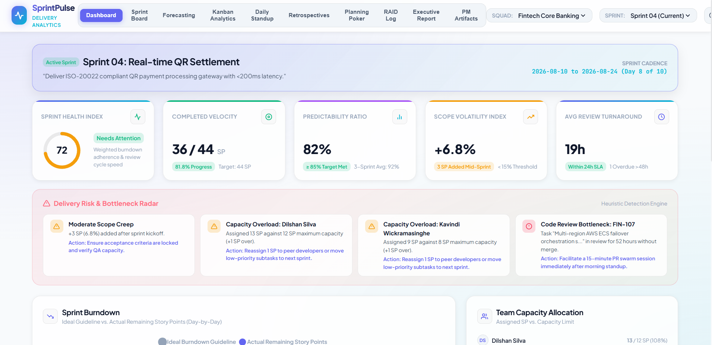
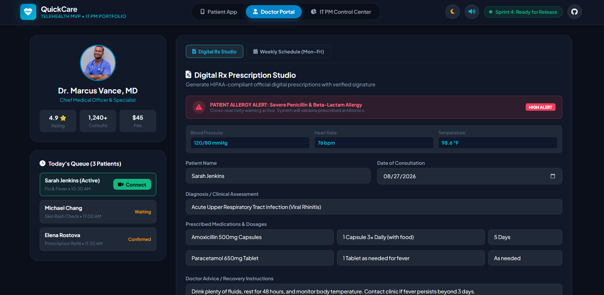
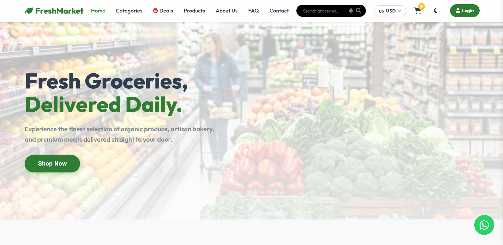

Hello, I'm
BSc Information Systems student passionate about IT Project Management. Skilled in Agile methodologies, sprint planning, SDLC documentation, and project tracking tools. Seeking an IT Project Management Internship to drive structured project lifecycles and deliver measurable results.
Get to know more about my background and expertise
I'm an aspiring IT Project Manager and Business Analyst currently pursuing a BSc in Information Systems at Sabaragamuwa University of Sri Lanka. I specialize in Agile methodologies, sprint planning, project tracking, and stakeholder management bridging the gap between technical teams and business goals.
With hands-on experience managing real-world projects using tools like Jira, Confluence, and Trello, I produce structured SDLC documentation including PRDs, RACI matrices, RAID logs, and WBS ensuring every project is delivered on time and within scope.
Projects Managed
PM Certifications
Agile Frameworks
Sabaragamuwa University of Sri Lanka
2024 – PresentRivisanda Central College
2022 – 2024Kegalle, Sri Lanka
Core competencies in IT Project Management
End-to-end project lifecycle management from initiation to delivery — defining scope, scheduling sprints, tracking milestones, and managing risks.
Leading Agile teams through sprint ceremonies — backlog grooming, velocity tracking, retrospectives, and team health analytics.
Gathering and analyzing business requirements, producing structured documentation including PRDs, RACI matrices, and stakeholder reports.
Bridging the gap between technical teams and business goals — from UI/UX prototyping in Figma to overseeing full-stack deployment on Vercel.
PM methodologies, tools & technologies I use
Real projects where I led planning, management & delivery

Role: Project Manager. Agile platform to analyze team sprint velocity and team health. Led Agile governance, produced SDLC documentation (PRD, RACI, RAID), designed metrics, and oversaw front-end development.

Role: Project Manager. Mobile app connecting patients with doctors for real-time consultations. Led Agile sprint planning via Jira, managed backlog grooming, risk tracking, budget planning, and front-end design.

Role: Frontend Developer & PM. Responsive e-commerce web app with voice search, multi-currency switching, and WhatsApp ordering. Managed feature prioritization, Git workflow, and deployment on Vercel.
Professional credentials in Project Management & Business Analysis
University of Moratuwa
AgileUniversity of Moratuwa
Project ManagementCoursera
Business AnalysisCoursera
PM ToolsCoursera
Project ManagementLean Project Management Foundation
LeanLean Project Management Foundation
LeanUniversity of Moratuwa
TechnicalOpen to IT Project Management internships & collaborations
numeshravindra2003@gmail.com
Ragala, Sri Lanka
BSc Information Systems
Sabaragamuwa University of Sri Lanka